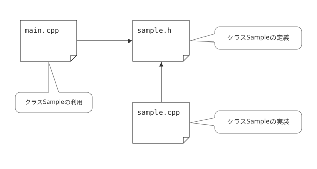
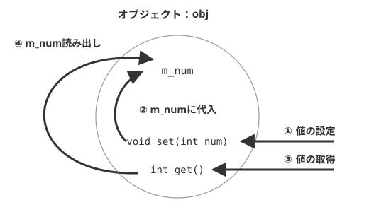
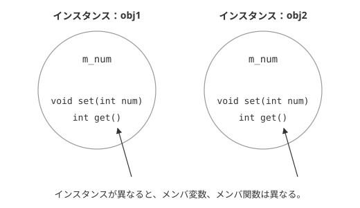

クラス
この章から先は、クラスと呼ばれるデータ構造を使用したプログラムを行います。すでに述べたとおり、オブジェクト指向プログラミングでは、クラスは必ず登場します。C++言語におけるクラスは、その構造だけを見ると、C言語の構造体とよく似ています。構造体は、複数の変数を１つにまとめたものでした。配列と違い、それぞれの変数はデータ型が異なっても構いません。
それに対し、クラスは、構造体の中に、さらに関数まで加えたものだといえばわかり易いでしょう。つまり、メンバとして変数と関数の両方を含めることができるという構造です。変数の方をメンバ変数、関数の方をメンバ関数と呼びます。クラスと構造体の違いは、これだけではありませんが、その他の違いについては、今後少しずつ説明していきます。
C++言語のクラスの概要
クラスの宣言
では、実際にC++言語のクラス宣言を見てみましょう。
class Sample
{
public:
void function();
private:
int m_num;
};
最初に付けるclassは、クラス宣言をすることを意味するものです。構造体のstructと同じような役割を果たしています。Sampleはクラスの名前です。
メンバ変数・メンバ関数
構造体の場合と同様、クラスの構成要素は、メンバと呼ばれます。これには、メンバ変数とメンバ関数とがありますが、普通の変数宣言や、関数プロトタイプの書き方と同じです。ここで宣言されるので、外側にプロトタイプ宣言を書く必要はありません。
このサンプルでは、メンバ変数として、m_numが、メンバ関数としてfunction()が定義されています。また、特にメンバ関数のことを、メソッドとも呼びます。
アクセス修飾子
また、ここで出てくる、publicとprivateというキーワードは、アクセス修飾子（しゅうしょくし）と言います。詳細は後で説明します。今のところは、メンバ関数の宣言の前にpublic、メンバ変数の宣言の前にprivateと書くと思っておいて下さい。もし、メンバ変数やメンバ関数が複数ある場合、次のようになります。
class Sample
{
public:
void function();
int function2();
private:
int m_num;
char* m_str;
};
クラスの定義とオブジェクトの生成
続いて、簡単なサンプルプログラムを通して、実際にクラスおよびオブジェクトをどのように活用するかについて説明しましょう。実際にこのクラスを利用するには、まずクラスの変数を宣言します。これは構造体変数を宣言するのと同じことです。
通常、これらはインスタンスとかオブジェクトなどといいます。オブジェクト指向という言葉は、このオブジェクトから来ている訳ですが、オブジェクトという言葉は、場面によって様々に意味を持ち得るため分かりにくい場合があります。そのため本サイトでは、クラスから生成されたものを、インスタンスという言葉で記述することにします。
インスタンス
クラスのインスタンスを生成することをインスタンス化、もしくはインスタンスの生成などといいます。なお、「インスタンス」という言葉には「実体」という意味があり、「インスタンス化」は「クラスを実体化する」という意味があるのです。
「クラス」はそのままでは単なる「型」に過ぎないので、使うには実体化する必要があるということです。メンバ変数やメンバ関数を使うとき（アクセスするとき）も、構造体と同じで、ドット演算子（.）を使います。また、インスタンスへのポインタを経由するときはアロー演算子（->）を使います。
簡単なサンプル
では実際に、簡単なサンプルプログラムを通してみてみましょう。
list2-1：クラスを用いた処理
#ifndef SAMPLE_H
#define SAMPLE_H
// クラス宣言
class Sample
{
public:
void set(int num); // m_numに値を設定する
int get(); // m_numの値を取得する
private:
int m_num;
};
#endif //SAMPLE_H
#include "sample.h"
void Sample::set(int num)
{
m_num = num;
}
int Sample::get()
{
return m_num;
}
#include <iostream>
#include "sample.h"
using namespace std;
int main()
{
Sample obj; // Sampleをインスタンス化
int num;
cout << "整数を入力して下さい:" << endl;
cin >> num;
obj.set( num ); // Sampleのメンバ変数をセット
cout << obj.get() << endl; // メンバ変数の値を出力
return 0;
}
5
実行結果を見れば判る通り、キーボードから入力された数値がそのまま出力されています。
プログラムの概要
ファイルの依存関係
では、ここでプログラムの概要を見ていきましょう。まずは、ファイルの依存関係を見ていきましょう。通常、クラス宣言は、ヘッダファイルの中で行います。そのためここでは、sample.hの中で、クラスの定義がなされています。このヘッダファイルは、実装を行う、sample.cppおよび、このクラスを利用するmain.cppで参照されます。
ヘッダファイルの内容がクラスの定義になったということと、ソースファイルの拡張子が、.cppに変わった以外は、ほぼC言語の場合と同じです。

図2-1：C++の各ファイルの依存関係
通常、ヘッダファイルのファイル名は、クラスの名前と対応した名前がつけられるのが一般的です。この例だと、ファイル名がsample.hであることから、クラス名は、Sampleとなっています。
また、このファイルはヘッダファイルであることから、C言語の場合と同様に、#ifndef、#define、#endifマクロで二重インクルードの防止処理が施されています。この規則に関しては、C言語の場合とまったく同様のルールが適用されます。
メンバ関数
C言語のプロトタイプ宣言にあたる部分は、クラスのメンバ関数の宣言の中に記述されています。ただ、実装は、対応する.cppファイルの中でなされています。ここでは、sample.cppの中で記述されています。
メンバ関数の定義の仕方は、通常の関数とそれほど変わりません。ただ、関数名だけでは、何というクラスのメンバ関数なのかが分からないので、関数名の頭にクラス名を付け::を挟みます。Sample::setなら、Sampleクラスのsetメンバ関数ということになります。その他のメンバ関数についても、同様です。（表2-1参照）
| 宣言 | 実装 |
|---|---|
| void set(int num) | Sample::set(int num) |
| int get() | int Sample::get() |
プログラムの処理の流れ
このプログラムは、キーボードから入力された整数を、一旦メンバ変数に記憶してから、それを出力するという非常に単純な例です。入力された値は、ローカル変数numに格納してから、setメンバ関数を使って、メンバ変数に記憶しています。この一連の処理の流れを、図にすると、以下のようになります。(図2-2.)

図2-2：プログラムの流れ
複数のインスタンス
list2-1だけを見る限りでは、「C言語と違い、随分と面倒くさいことをするものだな」と思うかもしれません。C言語であれば、変数と関数を定義し、呼び出すことによって、このような処理は簡単に処理できますし、コードももっと短くなるでしょう。
しかし、このようなプログラムのメリットは、実はすでに述べた通り、インスタンスを複数作ることができることにあるのです。まずは、以下のlist2-2を入力し、実行してみてください。なお、これを使用するにあたり、sample.hおよび、sample.cppは、list2-1のものをコピーしてそのまま利用して下さい。
#include <iostream>
#include "sample.h"
using namespace std;
int main(){
Sample obj1,obj2; // Sampleのインスタンスを複数生成
obj1.set( 1 ); // obj1のsetメソッド呼び出し
obj2.set( 2 ); // obj1のsetメソッド呼び出し
cout << obj1.get() << endl; // obj1のメンバ変数の値を出力
cout << obj2.get() << endl; // obj2のメンバ変数の値を出力
return 0;
}
2
このプログラムでは、obj1およびobj2という二つのインスタンスを作っています。実行結果からわかる通り、同じメソッドにアクセスし、同じメンバ変数に値を入れていますが、それぞれの実行結果は異なります。
これは、同じ名前のメンバ変数、メンバ関数であっても、インスタンスが異なれば別物であることを意味します。たとえば、obj1.set(1)とすれば、obj1のm_numが1になりますが、obj2のm_numにはなんら変化は起こりません。
同様に、obj1.get()を実行しても、値がとられるのはあくまでも、obj1.m_numであり、obj2とは、なんら関係ありません。このように、同じ名前がついたインスタンス変数やインスタンス関数であっても、インスタンスが異なれば別物であるというのが、オブジェクト指向最大の特徴です。(図2-3.参照)

図2-3：list2-2のイメージ
この例でいくのなら、obj1のm_numに値を代入しても、obj2のm_numの値は変わりませんし、その逆も同じです。つまり、インスタンスが違うと、同じ名前のメンバ変数でもまったく違うものだということです。